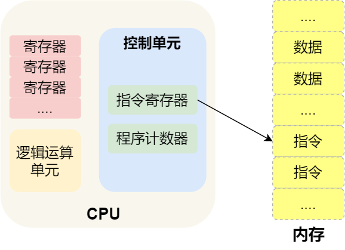

介绍
之前每次看到进程时， 对进程的理解还是在上学时背的那些定义：
- 进程就是运行起来的程序
- 进程就是PCB，PCB中放着进程运行的上下文和数据
- 进程要比线程更加重量
这些定义都没有没什么问题，但总是觉得对进程的理解还时不够，如果别人再问一些关于进程的问题，我就回答不上来了。每次在一些论坛上看一些对进程的解释，总是觉得没有办法从逻辑上来理解，更多的是倾向于把这个概念记住，而不是理解。今天从逻辑上聊聊什么是进程。
什么是进程
先来给进程下个定义。 进程就是运行中程序，在操作系统中使用PCB数据结构来代表进程，这个数据结构是包含了程序以及反映程序执行信息的数据结构的综合。
CPU的运行原理
想要深入的理解进程必须得先了解CPU是怎么运行的。CPU的执行过程简单概括一下就是取指执行。CPU执行过程的过程如下：

那 CPU 执行程序的过程如下：
- 第一步，CPU 读取「程序计数器」的值，这个值是指令的内存地址，然后 CPU 的「控制单元」操作「地址总线」指定需要访问的内存地址，接着通知内存设备准备数据，数据准备好后通过「数据总线」将指令数据传给 CPU，CPU 收到内存传来的数据后，将这个指令数据存入到「指令寄存器」。
- 第二步，CPU 分析「指令寄存器」中的指令，确定指令的类型和参数，如果是计算类型的指令，就把指令交给「逻辑运算单元」运算；如果是存储类型的指令，则交由「控制单元」执行；
- 第三步，CPU 执行完指令后，「程序计数器」的值自增，表示指向下一条指令。这个自增的大小，由 CPU 的位宽决定，比如 32 位的 CPU，指令是 4 个字节，需要 4 个内存地址存放，因此「程序计数器」的值会自增 4；
简单总结一下就是，一个程序执行的时候，CPU 会根据程序计数器里的内存地址，从内存里面把需要执行的指令读取到指令寄存器里面执行，然后根据指令长度自增，开始顺序读取下一条指令。
CPU 从程序计数器读取指令、到执行、再到下一条指令，这个过程会不断循环，直到程序执行结束，这个不断循环的过程被称为 CPU 的指令周期。
CPU指令带来的问题
CPU指令可以分为很多种，如果按照功能划分可以有以下分类：
-
数据处理指令：包括算术运算指令、逻辑运算指令、移位指令、比较指令等。
-
数据传送指令：包括寄存器之间、寄存器与主存储器之间的传送指令等。
-
程序控制指令程序控制指令：包括条件转移指令、无条件转移指令、转子程序指令等。
-
输入－输出指令：包括各种外围设备的读、写指令等。有的计算机将输入－输出指令包含在数据传送指令类中。
-
状态管理指令：包括诸如实现置存储保护、中断处理等功能的管理指令。
CPU在执行数据处理指令时的速度要比执行输入输出指令快的多。如果我们在碰到一段指令序列中，既有数据处理指令，又有输入输出指令。当CPU在执行到输入输出指令时，例如要从磁盘上读取数据，这时如果没有其他任何机制，CPU会进入空闲状态，等待读取数据的操作完成，然后再去执行后面的指令。
据不精准测试，执行一天IO指令可以执行100万条计算指令，如果一段指令序列中有很多IO指令的话，这会造成CPU利用率降低，也就是CPU会频繁的进入空闲等待时间。
引入进程提升CPU的利用率
CPU的部分指令会引起CPU进入空闲等待状态，从而使CPU的利用率降低。想要去提高CPU的利用率的办法是在CPU进入空闲时，让CPU去执行其他可以执行指令序列，不要继续等待，等IO指令完成之后后面再切回之前的指令序列，这样便可以提高CPU利用率。这种办法跟人类在打开电源烧水之后去做其他事情的思想类似。这种切换过程如下图所示。

在上面的图片中，我们可以通过修改程序计数器中的值，也就是让程序计数器指向不同的内存地址来使CPU执行不同的指令序列，指令序列是将在磁盘中程序文件加载到内存中某个空闲位置形成的。在图片中，指令序列中1的IO指令执行完之后，还需要重新切换回来，切换回来时，需要从指令序列1切换出去时的地址，将这个地址赋给程序计数器，这样就可以重新切换回指令序列1。那从指令序列1切换出去时的地址就必须在切换出去时，记录并且保存下来，然后切换回去时，读取并且赋给程序计数器。在这里不光需要记录切换指令序列时的地址，还需要记录更多的信息，例如栈的地址，CPU中寄存器的地址，记录这些的原因是如果再切换回去时，如果栈和寄存器没有恢复到切换出去时的就会造成栈读取错误或者计算错误。
那上面提到的这些内存地址和寄存器的数据都需要在切换出去时，记录到内存地址中。在操作系统中，使用一个数据结构来存放这些数据，名字叫做PCB。PCB这个数据结构保存了这个程序当前执行的位置、执行现场等重要信息，这个数据是存放在内存中，当需要切换时，就从PCB队列中使用合适的算法从中选取一个。
由于这种程序 + 记录当前执行情况的结构是并发造成的一个必然结果, 也就是在实现CPU高效管理时必然要出现的一个结构, 因此要实现并发、实现CPU的高效管理, 就有必要实现这种结构. 当然, 在实现这种结构之前, 我们有必要针对这一结构定义一个概念, 着就是操作系统中最著名的概念——进程. 进程用来描述一个程序极其执行过程中的信息, 即描述一个执行中的程序, 所以才将其命名为进程, 即进行中的程序.
对比程序和进程的概念, 程序时静态的指令、数据等, 而进程是执行起来的程序.
现在将进程的概念再具体化一些, 进程描述的是“程序以及反映程序执行信息的数据结构的综合”, 因此这个数据结构就称为认识进程的一个关键. 人们也给这个数据结构定义了一个基本概念, 即进程控制块(process control block, PCB).
CPU管理和多进程视图
有了进程概念之后, 可以应用进程概念来对CPU管理重新做描述: CPU的工作原理就是取指执行, 即执行程序, 而执行起来的程序是进程, 因此使用CPU和启动进程实际上等价的. 如果只有一个进程, 遇到I/O操作时, CPU只能等待I/O完成, 造成CPU工作效率低下. 为了提高CPU效率, 操作系统中应启动多个进程, 并能在多个进程之间合理切换. 现在CPU管理的最终结构可以概括为操作系统启动多个进程, 并能在多个进程之间调度/切换, 从而实现CPU高效管理.
多进程时图是操作系统的核心视图, 操作系统在从开机启动到最后关机的全部运行过程中, 都要围绕这个多进程时图工作. 具体来说, 在系统启动的最后, 进程0被创建出来; 然后通过fork()系统调用创建出1号进程, 并让1号进程执行shell程序; 接下来shell会调用fork()来创建一个进程, 去执行用户输入命令对应的程序; 用户程序可以通过fork()创建出来的新进程来执行对应的任务.
一个进程执行完毕以后可以调用exit()来退出自己, 但shell不会调用exit()退出自己, 除非关机. 因此shell进程会一直执行, 不断创建新的进程, 并用这些新进程完成各种各样的任务. 在操作系统最终关机时, 会将系统中所有进程杀死.
总结
进程就是为了提高CPU利用率而出现的，操作系统可以通过在多个进程之间切换来提高效率，切换进程时需要保存上一个进程的运行环境，恢复下一个进程的运行环境，这样才能让进程之间切换不会出错误。
If you like this blog or find it useful for you, you are welcome to comment on it. You are also welcome to share this blog, so that more people can participate in it. If the images used in the blog infringe your copyright, please contact the author to delete them. Thank you !